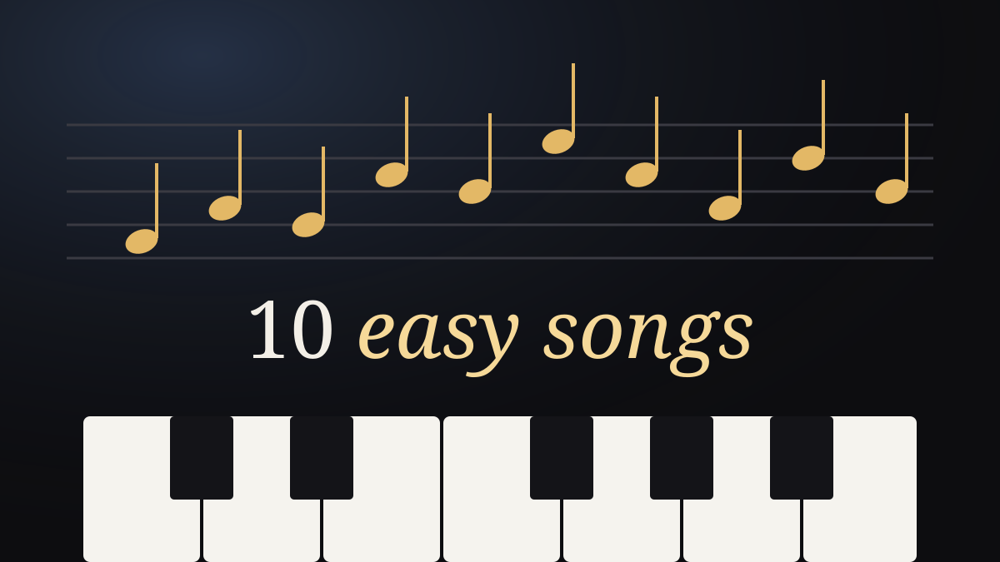

Songs
10 Easy Piano Songs Every Beginner Can Learn This Week

Nothing builds confidence like playing a tune people recognise. Here are ten easy piano songs for beginners, all public-domain or traditional, ordered roughly from easiest to slightly more challenging. For each song you get the opening notes in Western letters and Sargam (with Sa on C), plus a tip for playing it well.
How to use this list: learn one song a day. Start with the right hand only, go slowly, and play each phrase three times correctly before moving on. All ten are in the PianoVerse song library, with glowing keys and fingering.
1. Mary Had a Little Lamb
Notes: E D C D E E E · D D D · E G G
Sargam: Ga Re Sa Re Ga Ga Ga · Re Re Re · Ga Pa Pa
Only four notes (C, D, E and G), and your hand never moves. Put your right thumb on C and use fingers 1, 2, 3 and 5. The perfect very first song.
2. Twinkle Twinkle Little Star
Notes: C C G G A A G · F F E E D D C
Sargam: Sa Sa Pa Pa Dha Dha Pa · Ma Ma Ga Ga Re Re Sa
The second line simply walks down the scale from F to C. Hold the long notes (G and C at the end of each line) for two beats.
3. Ode to Joy (Beethoven)
Notes: E E F G · G F E D · C C D E · E D D
Sargam: Ga Ga Ma Pa · Pa Ma Ga Re · Sa Sa Re Ga · Ga Re Re
Almost entirely stepwise, so your fingers move to the neighbouring key each time. Watch the rhythm at the end of the phrase: the E is dotted (longer) and the D is short.
4. Row, Row, Row Your Boat
Notes: C C C D E · E D E F G
Sargam: Sa Sa Sa Re Ga · Ga Re Ga Ma Pa
A gentle, rocking 6/8 rhythm. In the "merrily, merrily" section you play three quick notes on each of C5, G, E and C, a great first taste of moving down the keyboard.
5. London Bridge Is Falling Down
Notes: G A G F E F G · D E F · E F G
Sargam: Pa Dha Pa Ma Ga Ma Pa · Re Ga Ma · Ga Ma Pa
Start with your thumb on D (you'll shift down to C for the very last note). Keep the first G slightly longer than the quick A that follows it; that "long-short" rhythm gives the song its bounce.
6. Jingle Bells (chorus)
Notes: E E E · E E E · E G C D E
Sargam: Ga Ga Ga · Ga Ga Ga · Ga Pa Sa Re Ga
Repeated notes are easy to find but hard to keep even. Use a light, bouncy touch and keep the beat steady with a metronome around 100 BPM.
7. Happy Birthday
Notes: G G A G C B · G G A G D C
Sargam: Pa Pa Dha Pa Ṡa Ni · Pa Pa Dha Pa Ṙe Ṡa
In 3/4 time, with a short pickup ("Hap-py"). The jump up to C and D is your first real stretch, so let your hand move rather than straining your fingers. (The dot above Sa and Re means the higher octave.)
8. When the Saints Go Marching In
Notes: C E F G · C E F G · C E F G E C E D
Sargam: Sa Ga Ma Pa · Sa Ga Ma Pa · Sa Ga Ma Pa Ga Sa Ga Re
The long held G on "saints" and "in" is the fun part. Count four full beats. This one sounds great with a steady left-hand C underneath once you're comfortable.
9. Brahms' Lullaby
Notes: E E G · E E G · E G C B A A G
Sargam: Ga Ga Pa · Ga Ga Pa · Ga Pa Ṡa Ni Dha Dha Pa
Play it softly and smoothly (legato), connecting each note to the next. A lovely song to practise gentle dynamics, and to play at bedtime.
10. Amazing Grace
Notes (in G): D G B G B A G E D
Sargam (Sa = C): Re Pa Ni Pa Ni Dha Pa Ga Re
A slow 3/4 hymn tune that teaches expressive, singing phrasing. Let the long notes ring, and try the sustain pedal (hold the space bar in PianoVerse) for a warmer sound.
Practise smarter: a one-week plan
| Day | Songs | Focus |
|---|---|---|
| Mon | 1 · 2 | Finding C, five-finger position |
| Tue | 3 | Stepwise movement, steady beat |
| Wed | 4 · 5 | Long-short rhythms |
| Thu | 6 | Repeated notes, even touch |
| Fri | 7 · 8 | Stretches and held notes |
| Sat | 9 · 10 | Soft, smooth, expressive playing |
| Sun | Your favourites | Play for someone! |
Tips for learning any song faster
- Listen before you play. Knowing how it should sound makes mistakes obvious.
- Chunk it. Learn one phrase (4–8 notes) at a time.
- Slow down. Practise at 60–70% speed, and speed up only when it's accurate.
- Use fingering. Consistent fingers build muscle memory quickly.
Ready? Open PianoVerse, choose any song above, and follow the glowing keys. Each one has step-by-step guidance and suggested fingering.